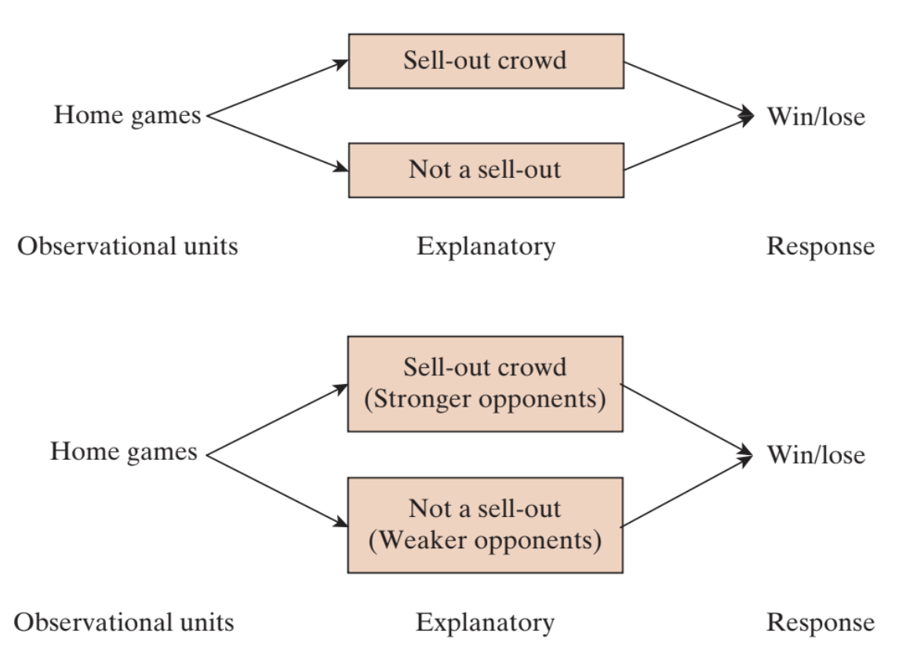

5-1 : Association and confounding
MAT 2100: Introduction to Statistics
Grace College
Last updated September 24, 2024
The Jesus Creed
Hear, O Israel: The Lord our God, the Lord is one.
Love the Lord your God with all your heart and with all
your soul and with all your mind and with all your strength.
The second is this: Love your neighbor as yourself.
Home court disadvantage?
Sports teams prefer to play in front of their own fans rather than at the opposing team’s site. Having a sell-out crowd should provide even more excitement and lead to an even better performance, right? Well, consider the Oklahoma City Thunder, a National Basketball Association (NBA) team, in its second season (2008–2009) after moving from Seattle. This team had a win-loss record that was actually worse for home games with a sell-out crowd (3 wins and 15 losses) than for home games without a sell-out crowd (12 wins and 11 losses). (These data were noted in the April 20, 2009, issue of Sports Illustrated in the Go Figure column.)
Exercise 1
Identify the observational units and variables in this study. Also classify each variable as categorical (also binary?) or quantitative.
Exercise 2
When did the Thunder have a higher winning percentage: in front of a sell-out crowd or a smaller crowd? Support your answer by calculating the proportion of sell-out games that they won and also the proportion of non-sell-out games that they won. (Write both these proportions as decimals.)
Definition 1:
Definition ():
Two variables are associated or related if the value of one variable gives you information about the value of the other variable. When comparing two groups this means that the proportions or means take different values in the two groups.
Exercise 3
Do the two variables appear to be associated?
Often, when a study involves two associated variables, it is natural to consider one the explanatory variable and the other the response variable.
Definition 2:
Definition ():
The explanatory variable is the variable we think is "explaining" the change in the response variable and the response variable is the variable we think is being impacted or changed by the explanatory variable. The explanatory variable is sometimes called the independent variable and the response variable is sometimes called the dependent variable.
Exercise 4
Which would you consider the explanatory variable in this study? Which is the response? (That is, what are the roles of these variables in this study?)
There are two possible explanations for this odd finding that the team had a better winning percentage with smaller crowds:
- The sell-out crowd caused the Thunder to play worse, perhaps because of pressure or nervousness.
- The sell-out crowd did not cause a worse performance, and some other issue (variable) explains why they had a worse winning percentage with sell-out crowds. In other words, a third variable is at play, which is related to both the crowd size and the game outcome.
Exercise 5
Consider the second explanation. Suggest a plausible alternative variable that would explain why the team would be less likely to win in front of a sell-out crowd than in front of a smaller crowd. (Make sure it’s clear not just that your explanation would affect the team’s likelihood of winning but also that the team would be less likely to win in front of a sell-out crowd compared to a smaller crowd.)
Definition 3:
Definition ():
A confounding variable is a variable that is related both to the explanatory and to the response variable in such a way that its effects on the response variable cannot be separated from the effects of the explanatory variable.
Exercise 6
Identify the confounding variable based on your suggested explanation in [REF=TODO] . Explain how it is confounding—what is the link between this third variable and the response variable, and what is the link between this third variable and the explanatory variable? (Hint: Remember that this variable has to be recorded on the observational units: home games for the Thunder.)
Another variable recorded for these data was whether the opponent had a winning record the previous season. Of the Thunder’s 41 home games, 22 were against teams that won more than half of their games. Let’s refer to those 22 teams as strong opponents. Of these 22 games, 13 were sell-outs. Of the 19 games against opponents that won less than half of their games that season (weak opponents), only 5 of those games were sell-outs.
Exercise 7
Was the Thunder more likely to have a sell-out crowd against a strong opponent or a weak opponent? Calculate the relevant (conditional) proportions to support your answer.
When the Thunder played a strong opponent, they won only 4 of 22 games. When they played a weak opponent, the Thunder won 11 of 19 games.
Exercise 8
Was the Thunder less likely to win against a strong opponent than a weak one? Again calculate the relevant (conditional) proportions to support your answer.
Exercise 9
Explain how your answers to [REF=TODO] and [REF=TODO] establish that strength of opponent is a confounding variable that prevents drawing a cause-and-effect conclusion between crowd size and game outcome.
Exercise 10
Summarize your conclusion about whether these data provide evidence that a sell-out crowd caused the Thunder to play worse. Write as if to a friend who has never studied statistics. Be sure to address the fact that the Thunder had a much smaller winning percentage in front of a sell-out crowd.
Confounding explains why you cannot draw a cause-and-effect conclusion from association alone: The groups defined by the explanatory variable could differ in more ways than just the explanatory variable when confounding is present. The diagram in the figure below illustrates the confounding in the Thunder study. The top panel shows the study design: Observational units (home games) are sorted into groups according to the explanatory variable (whether the arena was sold out). Then the response (win/lose) was observed. The bottom panel shows the confounding: sell-out crowds tended to be against stronger opponents; weaker opponents tended not to sell out the arena.
Figure 4:
